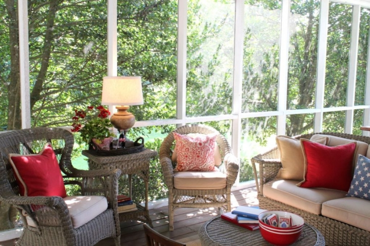

.png)
.PNG)
.PNG)
.PNG)
.PNG)
.PNG)
.JPG)
.JPG)
.PNG)
.PNG)


We interrupt your week of home tours to bring you a few distractions you might enjoy. 🙂
1. Upon the recommendation of a friend of mine in North Carolina, I went to see this movie with my mother and a bunch of twenty-something-year olds. The young actress who played Aurora is from Conyers, Georgia. Such a small world! The film was kind of Lord of the Rings meets Wicked meets fairy tale..with a twist. I definitely enjoyed it, but one of the twenty-something-year olds surprised me by saying, “You shouldn’t mess with fairy tales.” 🙂
2. The first 10 pages of Jan Karon’s new book, Somewhere Safe With Somebody Good are available to read here. When I read them, I felt like I was right back in Mitford and had never left. Can’t wait to read the entire thing in September!
3. One of our local coffee shops carries a salted caramel gelato that is positively divine. I have been on the hunt for a source that is not quite so expensive. Found it at Walmart and we have been eating it waaaaaay too much. Yes, Walmart! Here is a review of the product if you want another opinion about its deliciousness.

4. One of our readers has a new book out (giveaway coming next month!), and she is part of a 5 book + a few other summer time goodies giveaway. You can check it out here.
5. Take a look at this pretty house, and you might feel like you are on vacation in beautiful Maine.
6. I had a sundried tomato quiche at this restaurant this week. The daily special advertised Tomato Pie quiche, and when they brought the plate to me, I was happily surprised to find the mix of sundried tomatoes and fresh basil leaves inside. I want to try this recipe to see if I can match the yummy flavors.
7. I ran across this super cute and easy idea on Pinterest this week. I’m going to have to find a place for these.
8. Speaking of Pinterest, I started a new Pinterest board last night for all things 4th of July. I hope you will check it out. You might find something red, white, and blue there you like. 🙂
9. You’ll enjoy this video from the Piano Guys…pretty music and pretty story.
10. And finally, bring out your tissues for this one. My mom sent it to me, and it is just toooo sweet not to share.
Believe in good.
Enjoy your weekend.
🙂


.PNG)
Hi Kelly! I live 3 minutes from Bare Bulb! I love it that place! Often, friends and I will go to Bare Bulb before or after a movie…so fun! I love your blog! It’s so neat to read a “hometown” girl blog. I’ll be heading to Wal Mart to get some of that ice cream tomorrow! Have a very happy 4th of July! We will be heading to Tybee!
———————————————————————-
Don’t you just love Bare Bulb, and have you tried the gelato???! I hope you have had a fun time at Tybee. The weather should have been just perfect for you!
Kelly
Hello! I’m one of the authors involved in the book giveaway (that’s my ‘baby,’ “Rescue Me, Maybe,” in the photo) and just wanted to say thank you for including the link to our giveaway!
The main character in the book I’m currently working on is an interior designer, and “she” loves that kitchen photo you posted! I can see I’m going to need to poke around your site!
Thanks again,
Jackie
———————————————————————-
Hi Jackie! You are quite welcome for the link to the giveaway. I think anyone who loves pets would enjoy your book. 🙂 If the main character in your new book is into design, I’m certain I would like it! Thanks for visiting the blog!
Kelly
I love the Thai Life commercial. That one should be mandatory viewing. Might offset some of the nasty self-absorbed Kardashian-type reality tv we’re exposed to everyday. Bring back kindness. Thanks for sharing.
———————————————————————
You are so right, Nikki! It should be mantadory viewing. I think the first and last day of school in perhaps middle and high school would work because it would not only show the importance of thinking of others but also the value of a free education…something that is so often taken for granted in this country.
Thank you for your comment!
Kelly
Oh loved theses distractions….especially the video… My favorite part was seeing the precious little girl in her school uniform!! I am so happy you are on summer break….. Woo hoo!
Here is a distraction for you .. Go to castlehillinn.com and look at this beautiful inn in Newport, RI. This was one of my favorite drink spots from my trip. My friends and I were entertained with regatta on the ocean during our stop at this pretty place.
Love love summertime!!!!!
————————————————————————
I bet you had a fantastic time on that trip that I sooooo want to take. 🙂
jealous jealous here.
Kelly
Such wonderful links! I admit I cried after the last video. Such a great message. I have been omitting sugar from my diet lately to help with weight loss, but I am tempted by that Sea Salt Caramel Ice Cream…gee thanks! 😉 I, too, can’t wait for Jan Karon’s new book. When I read the excerpt, it just made me so happy to be ‘back’ in Mitford again. But I’m worried about what will happen to Barnabas in this one. All the characters (even the dog) feel like old friends!
Great post as always!
Blessings,
Amy
———————————————————————-
I think crying is certainly permitted with the video. 🙂 So sorry to tempt you with the ice cream. I am worried about Barnabas too. (That would really make me cry if something happens to him.) Thank you for your sweet comments!
Kelly
Kelly, it gave me goose bumps to see #10…what a kind heart he has.
I checked out your pins on July 4th and you pinned some wonderful ideas, thanks for sharing.
——————————————————————–
Oh yes, #10 was a goose-bump kind of video. 🙂 Thank you for checking out the Pinterest board!
Have a good week!
Kelly
So many great links today and love seeing the good books – heading to the beach before long and need some to take. Love the Maine house – so pretty and the favors…adorable!! Happy Monday ~
———————————————————————-
I am glad you enjoyed all the links. Lucky you getting to go to the beach. Our trip is not for a few weeks. I loved that Maine house too, and weren’t those favors so smart?!
Happy Monday to you!
Kelly
First of all, tomato quiche….yum!!
Secondly, those monogram chalkboard letters are great.
Lastly, your 4th of July board was so fun to look through.
———————————————————————-
Thank you Lori! I am so glad you liked it all. 🙂
Kelly
Kelly,
I love all of these ideas! Thanks for sharing them with us. There is a Zucchini and Tomato Frittata recipe in the July Better Homes and Gardens magazine that looks yummy too! The unsung hero video was awesome! Thanks for to your Mom for that one! I am going to send it to my Mom and sister!
———————————————————————–
I will look for that recipe Dawn! I love zucchini and tomato together…like a ratatouille. Glad you are sharing the blog love and sending the video on. It IS such a good one!
Kelly
Kelly,
What a great way to share very worthwhile information. I loved the video’s…both were great.
I can’t wait for the Jan Karon book. I would live in Mitford if there was a town that was similar.
I hope you have a wonderful weekend. Sorry this reply is late…I read your post this morning but I had to leave the house before I could reply.
xo,
Karen
———————————————————————–
So glad you enjoyed the videos Karen. I could just listen to the Piano Guys’ music all day long. 🙂 I think we all want a Mitford…Blowing Rock seemed pretty much like it when we were there. You do not need to apologize for being “late”. I am so appreciative of you reading the posts and always taking the time to leave such sweet comments! You are a sweetheart!
Kelly
I enjoyed your entire post this afternoon. Unsung Heroes was special and gives us much to think about. I just had to read the 10 pages from Jan Karons new book and loved it. Poor hubby had to wait on dinner. Now I wonder what happened to Irene? Where is Irene? I can’t wait till Sept and the book comes out.
Thanks for sharing!
—————————————————————————-
Yes, what happened to Irene?? Do you suppose she is the character the title is referring to? And I am worried about Barnabas. I can’t wait until Sept. either!
Kelly
Loads of ideas! Thanks! I love your new Fourth of July Board! I have a lot of those same pins on my board. I love the monograms chalkboards! What a cute idea! Looks like you are enjoying your summer!
——————————————————————–
Thanks Jayne! I thought those monogram chalkboards were just the smartest things! You should make some. 🙂
Kelly
Hi Kelly,
Thanks so much for introducing us to the PianoGuys! I followed some of the links to their other videos, and really liked the Let It Go/Vivaldi one – so beautiful! And the Unsung Hero video was so inspiring 🙂 The part where he leaves the bananas on the doorknob reminded me of how my kids laughed at me when I told them that when I was a kid I liked to “ding dong ditch” — but I always left flowers on the steps in front of the door! They thought that was hysterical, and I learned that there was a name for ringing the bell and running away!
Megan
———————————————————————–
So glad you now know about the Piano Guys! I love their work, and you could spend a really long time going through all their music. I had no idea that ding dong ditch is what you called ringing the bell and running! Learned something new today. 🙂
Have a great week Megan!
Kelly
What fun, inspiring weekend post! Your Fourth of July pinterest board is a great collection of ideas. Thanks for sharing the link to the new Jan Karon book. I’m so glad that she’s publishing a new book! Your home looks beautiful in its summer glory!
————————————————————————
Thank you for the compliments on the board and the house! I, too am so glad that Jan Karon is publishing a new book…and I am especially glad it is set in Mitford. It’s like being able to visit with old friends again. Can’t wait until Sept. 🙂
Kelly
I discovered the Mitford series from you; hard to believe these sweet books were off my radar when they first came out, but as a friend in my book club said, now you don’t have to wait to read the next one! I’m almost finished with A New Song. Your posts, as always are an inspiration – so much so that I did a 2nd post for the year on my blog! We’ve enjoyed a salted caramel/chocolate/pretzel ice cream from Target, just in case you are interested…
————————————————————————
It is hard to believe you didn’t know about them! Where in the world were you all those many years ago? 🙂 I agree with your friend though; you are lucky that you can just keep right on reading…talk about continuity! I think Out to Canaan was my favorite. I would really like to read the entire series this summer..which means I need to get busy on that. Thanks for the shout out over on your blog…now go get busy on another post (and I will go get that ice cream from Target..oh wait we have to finish the Bachelorette first. 🙂 )
Kelly
Hi Kelly – looks like summer is in full swing around your house. And, you’re killing me with the ice cream and the tomato quiche!!! (Just got back from the store so I’m glad I hadn’t read this post first or I’d have something decadent in the freezer, calling my name.)We are still in school, can you believe it? But, the weather has been a “10”, sunny and low humidity. Will be texting my friend about the new Jan Karon book, maybe I’ll get it for her as a birthday gift. Wonderful post with just so much to take in, am going back now to read it all, again.
———————————————————————–
Didn’t mean to kill you with the yummy food! I cannot believe you all are still in school…gosh we will be having back to school sales here shortly. Seriously. That Jan Karon book will make a wonderful gift for many people.
Have a great week!
Kelly
Hi again Kelly: I got soo excited seeing the post re the ice cream. We are on our 3rd go round with this absolutely delicious concoction and I think I’ve gained three pounds:-) It is truly wonderful! After seeing the post I thought how wonderful to sit down with Jan Karon’s new book, which I am so looking forward to, after eating a piece of that delicious looking tomato pie and finishing it all off with the ice cream. Yum!!!! My idea of a great Sunday afternoon. The other points of interest looked wonderful as well and the video at the end is what we should all aspire to. Be the good samaritan God has asked us all to be as the situations rise. Thanks again for another inspiring post. Blessings..Gail
————————————————————————–
Yes, that ice cream is VERY good, isn’t it Gail?! Your idea of the perfect Sunday afternoon does indeed sound wonderful. 🙂 Hope your week is off to a great start.
Kelly
Hi Kelly. Thank you for the shout-out about my book and our book giveaway!!! And for the sneak peak at Jan Karon’s newest book — can’t wait to read them! She’s my idol.
Hugs,
Barb
————————————————————————-
You are more than welcome! My mom just finished your book, and she said that it was VERY good and makes you want another sequel! Can’t wait to get started on it myself. Hope you enjoy the first 10 pages of the new Mitford book. It too will make you hungry for more. 🙂
Kelly
Love the unsung hero video! In this age where everyone posts all their (or their children’s) accomplishments on social media, it’s a welcome reminder that many acts of kindness are unseen…and yet seen by our loving God! Thank you.
Looking forward to checking out your 4th of July Pinterest board…such a joyous holiday and fun decorations with favorite colors…red, white, and blue!
———————————————————————
So true about social media. I think we are seeing the results of too much teaching of the “healthy self concept” philosophy. I would love to see a return to humbleness.
Thanks for checking out the Pinterest board. You are right about it being such a fun holiday to decorate for!
Kelly
Kelly, had to come back and tell you to go see The Four Seasons movie. I’ve seen the musical and loved the movie just as much. 🙂
——————————————————————-
You mean Jersey Boys, right? I think we are planning on seeing that this summer. Thanks for your recommendation Stacey!
Kelly
Just love the Unsung Hero video. I’ve watched it before and can’t help but cry when the little girl shows up in her school uniform. I might watch this every day for awhile. Such great life reminders.
———————————————————————-
I cry at that scene every time I see it as well!! And I like the idea of watching it every day too. 🙂
Kelly
Well, just as I am about to get started on the day, my IPhone bings and there it is a post from Kelly! So many wonderful shares in this post. As if Coastal Living isn’t torture…now, Maine Home? Drool. Just had Ben and Jerry’s Americone Dream last night, but this Sea Salt Carmel sounds yummy. Will need to get some. Books, movie, music and Oh, a feel good moment. Thank you Kelly and to your Momma too. You all just made my Sunday with this share. Now for a quick peek at your pinterest and then I am off to paint a few things today. Oh, Summer time.
Debra
———————————————————————-
Maine Home and Cape Cod Home both have gorgeous homes to drool over. My kids are big Ben and Jerry’s fans, and my favorite is Coffee Toffee bar crunch. Hope you got your painting projects completed!
Kelly
Try the Breyer’s caramel gelato. I can’t remember the exact name but it is really good. I do indulge in 1/2 cup from time to time. That is my limit and the first sweet thing I have eaten in months. Better for me not to bring any home.
———————————————————————-
I will Kim! It sounds like one I would like. If that is the first sweet thing you have eaten in months, it must be pretty high on your list of desserts. 🙂 Thanks for the recommendation.
Kelly
Oh I am so thrilled you are sharing Barbara’s book. Coming To Rosemont. She is special friend of mine and I love her success. The Blessing Video is too precious. Thanks for sharing.
———————————————————————-
Yes, she is such a sweetheart! I am so proud of her success too. I am glad you stopped by Marty and enjoyed the video. Hope your week is a good one.
Kelly
Thanks for such a fun post! Love the last video. It made my day. Can’t wait to check out all of your suggestions! XOXO!
——————————————————————–
You are more than welcome, and I am so glad the video made your day! Hope you had a chance to check out all the links. Have a great week Anne!
Kelly
Hi Kelly,
It’s been a while since I’ve come by, but I’m so glad that I did.
You shared so many fun Summer ideas in this post.
And I smiled so big when I saw the link for the Piano Guys! John Schmidt was the ‘entertainment’ at our wedding reception.
My husband has been a BIG fan of his for many, many years. We were so blessed that John accepted our invitation (and request) to play at our reception. He was incredible, of course. So many amazing memories from that special day :0)
Sending happy wishes your way for an incredible Summer!
Suzanne
————————————————————————–
You have to be kidding! THE Jon Schmidt!! You lucky lucky girl! Wow. That would certainly make for amazing memories for your wedding. Thanks for stopping by, and I hope you are having a wonderful summer too. 🙂
Kelly
Waiting for my husband to get ready for church, I sat down and checked my e-mail. this post was in my in box….how lovely. Love the unsung hero video, we really do “reap what we sow”. The ice cream looks delicious and I am looking forward to buying some! I am enjoying your home tour,it is so fun to see all your neat decorating ideas.
———————————————————————–
Wasn’t that video wonderful? I just loved the message in it. I hope you get some of the sea salt caramel ice cream soon, but I will warn you…it is addicting!
Kelly
Wow, such a fun bunch of ideas! This will keep me busy for awhile! Your 4th of July Pinterest board is so cute– I’ve already gotten some ideas from it. That quiche looks pretty tasty, too. Can’t wait to check out those books.
Love that you included a little something for no matter what we feel like doing!
————————————————————————
Thanks Vicki! Glad you liked the Pinterest board and found some ideas you liked on it. Yes, I wanted to include a variety of links for you all. 🙂
Kelly